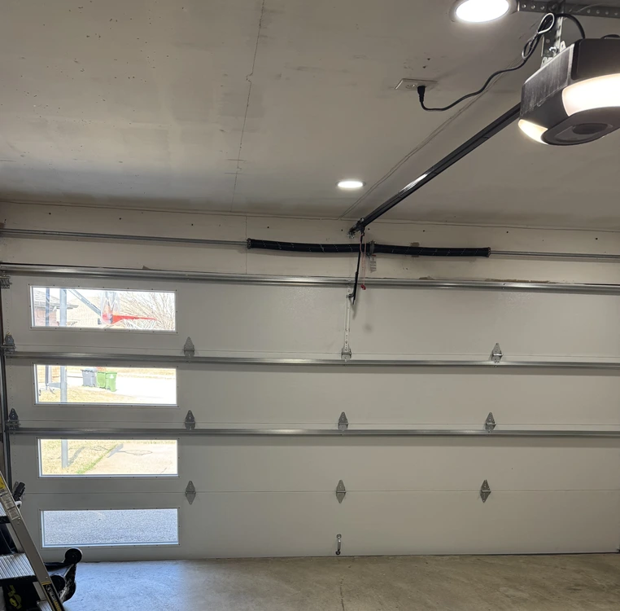
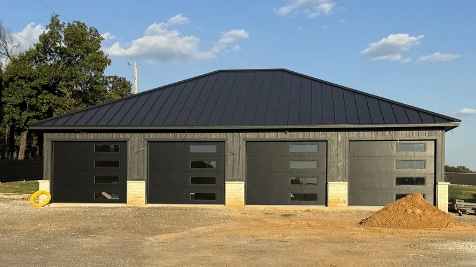
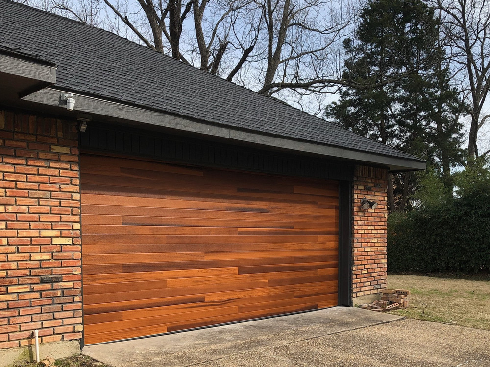
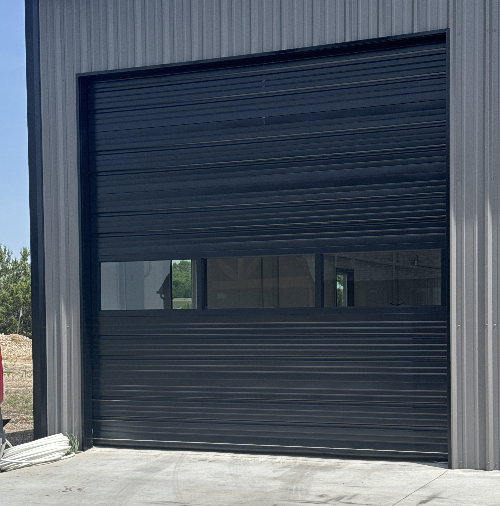
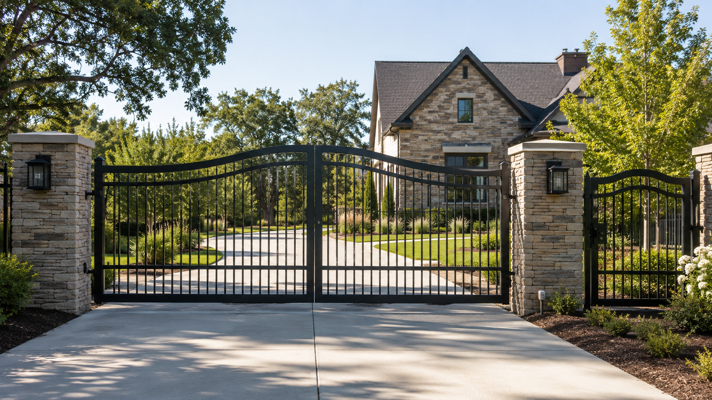
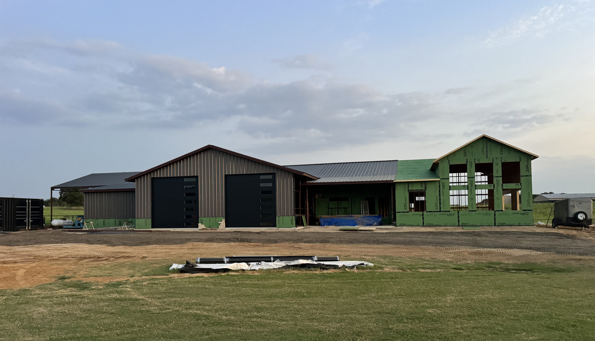
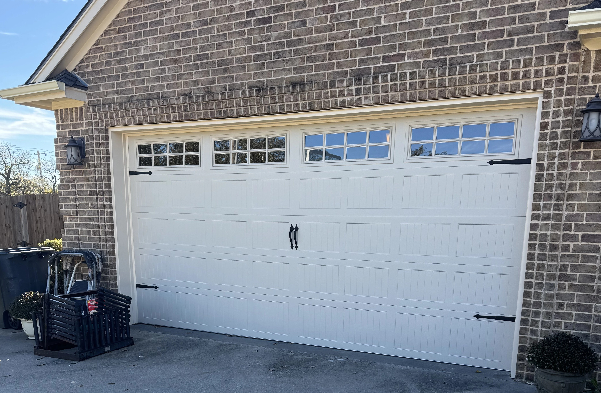
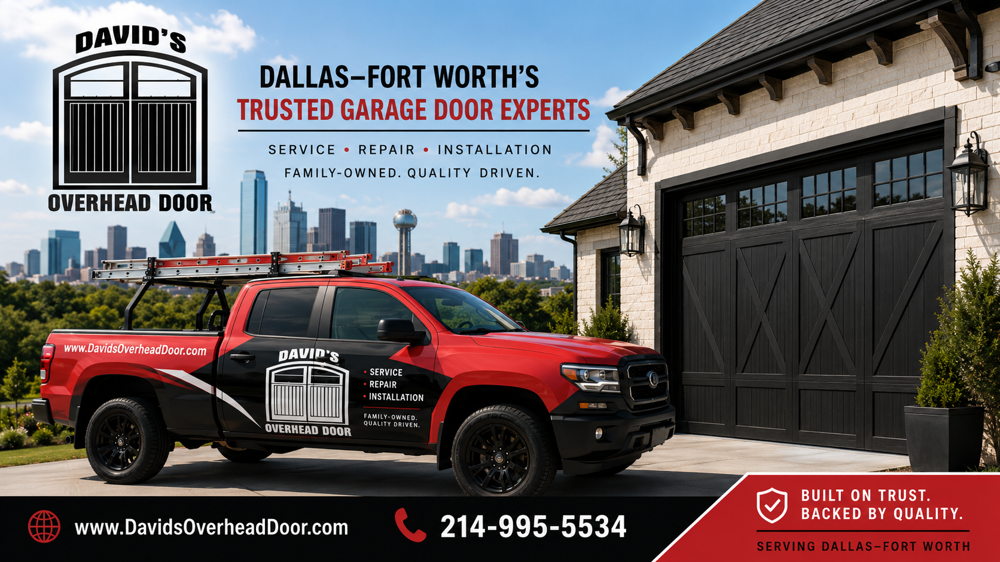

Garage Door Repair
Diagnosis and repair of damaged, noisy, stuck, uneven, or non-operating residential garage doors.
Learn About RepairsResidential & Commercial Door Service
David's Overhead Door provides dependable residential garage door and commercial overhead door service throughout Irving, Dallas-Fort Worth, and surrounding communities.

Garage & Overhead Door Services
From residential garage door repairs to commercial overhead door systems, David's Overhead Door provides installation, repair, troubleshooting, replacement, and maintenance for a wide range of door systems.

Diagnosis and repair of damaged, noisy, stuck, uneven, or non-operating residential garage doors.
Learn About Repairs
Garage door installation, replacement, opener service, spring replacement, track repair, rollers, cables, hardware, and maintenance.
Residential Services
Commercial overhead door repair, installation, operators, controls, hardware, troubleshooting, and preventive maintenance.
Commercial Services
Automatic gate installation, repair, operator service, troubleshooting, adjustment, and preventive maintenance throughout the DFW area.
Automatic Gate ServicesCommercial Door Service
David's Overhead Door services commercial overhead door systems throughout the Dallas-Fort Worth area. We work with businesses, warehouses, shops, facilities, and other commercial properties requiring reliable door operation.


Residential Garage Doors
Whether your garage door has stopped operating, needs adjustment, has damaged hardware, or needs replacement, David's Overhead Door can evaluate the system and recommend the appropriate solution.
Manufacturer Experience
David's Overhead Door installs, services, repairs, and troubleshoots garage doors, overhead doors, openers, operators, automatic gate systems, and related equipment for residential and commercial applications.
In addition to the manufacturers shown below, David's Overhead Door services and repairs all major garage door, overhead door, opener, operator, and automatic gate brands throughout the Dallas-Fort Worth area. We are not limited to a single manufacturer or product line.
C.H.I. Overhead Doors
Genie
LiftMaster
Local. Experienced. Family Operated.
David's Overhead Door is a family-owned and operated garage and overhead door company based in Irving, Texas.
We serve residential and commercial customers throughout Dallas-Fort Worth and surrounding communities with garage door and overhead door installation, repair, troubleshooting, maintenance, opener service, and related door work.
References are available upon request.
Learn More About David's Overhead Door
DFW Service Area
David's Overhead Door is based in Irving and provides mobile residential and commercial door service throughout the DFW Metroplex and surrounding areas.
Need Door Service?
Call to discuss residential garage door service, commercial overhead door service, repairs, installations, or estimates.